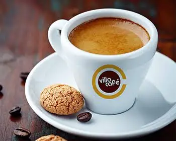
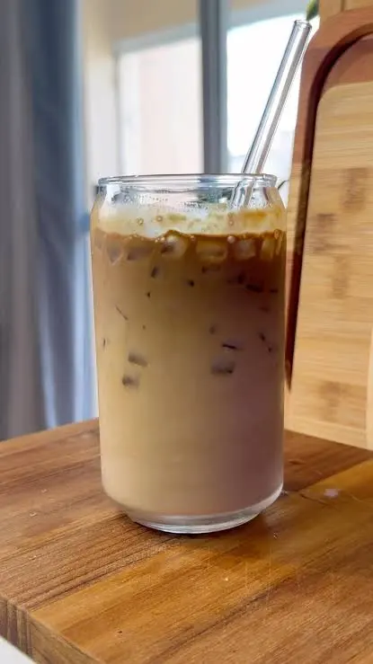
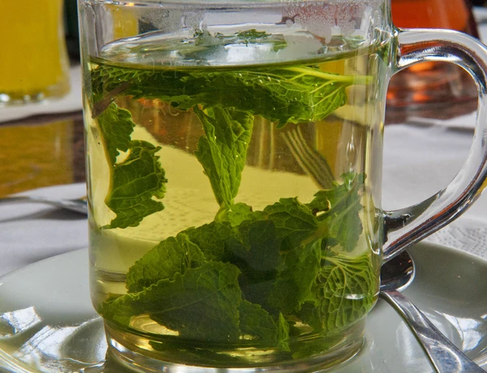

Destaque
Destaque
Cappuccino
Espresso duplo com leite vaporizado cremoso e canela.
R$ 14,50Grãos 100% arábica do Cerrado Mineiro e da Mantiqueira, moídos na hora e preparados em métodos de extração precisos.
Clássicos da casa e receitas próprias preparadas com grãos selecionados.
Destaque
Espresso duplo com leite vaporizado cremoso e canela.
R$ 14,50
Bebida encorpada com crema de avelã e notas de cacau.
R$ 9,00
Extração a frio por 16h servida com caramelo da casa e gelo.
R$ 18,00
Infusão de ervas finas com maçã desidratada e hibisco.
R$ 11,00Moagem na hora e água a 92°C para manter a doçura natural de cada lote.
Detectando formato de mídia suportado...
Comparativo da intensidade sensorial das bebidas da casa.
Grãos selecionados com avaliação acima de 84 pontos na escala SCA.
Filtre bebidas por orçamento e veja o resumo de preços e médias do cardápio.
Abra o Console (F12) no navegador para visualizar as tabelas completas e o relatório estatístico.
Filtre por categoria, busque pelo nome, marque seus favoritos ou adicione novas bebidas.
Carregando cardápio...
Inclua uma nova bebida no cardápio para favoritar, filtrar ou remover da lista.
Do grão à xícara com torra controlada e preparo na hora.
Venha tomar um café conosco nos seguintes horários:
| Dia da Semana | Abertura | Fechamento |
|---|---|---|
| Segunda a Sexta | 07:30 | 20:00 |
| Sábado | 08:00 | 19:00 |
| Domingo e Feriados | 08:30 | 14:00 |
Escolha entre o salão interno ou a varanda ao ar livre.
Reserve com antecedência para garantir sua mesa no horário desejado.